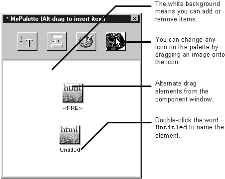

Table of Contents
Table of Contents
 Previous Section
Previous Section
Table of Contents
Previous Section
Choose Tools->Palettes->New.
Choose a name and a location and click Open to create a new empty palette.
Add items to the palette.
When you're finished adding items, choose Tools->Palettes->Toggle Editing to turn off edit mode.
Save your changes by choosing Tools->Palettes->Save. Be sure to choose Save from the Palettes menu, not the File menu.

By creating a custom palette, you can store portions of an HTML page for later reuse. You can store any combination of elements from a page --- an individual element, several elements including text, or an entire page --- as a single palette item.
For example, you can use custom palettes to store:
When storing a reusable component on a palette, you can drag it from one of three places: from the file system, from the application window, or from the parent component's window. If you drag from the parent component's window, any bindings that were made before dragging the component are preserved.
Note: If you're storing a reusable component, make sure all of its exported variables are in lower-case letters. See "Reusable Component Limitations"
The custom palette appears in the palette window along with the standard palettes and you use them the same way. When you first create a custom palette, it is displayed in editing mode. In this mode, you can drag items on to and off of the palette. That is, dragging an item off of a palette deletes it. When your palette is ready to use, perform the command Tools->Palettes->Toggle Editing. Editing mode is turned off, and the background becomes the same as for the other palettes. Once editing mode is turned off, dragging an element off of the palette does not remove it---it adds the element to the destination page just as you would expect. (As the command name suggests, you can use Toggle Editing to turn editing mode on again later if you wish to make changes.)
Important: Images and components placed on the palette are copied into the palette. If you add an item to the palette and then wish to change the item:
 Next Section
Next Section